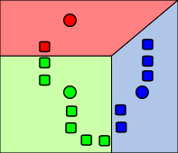
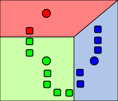

You (probably) don't need Machine Learning

If you and/or your organization don’t have good, clean data, you are most definitely not ready for machine learning. Data management should be your first step before diving into any other data project(s)

 
